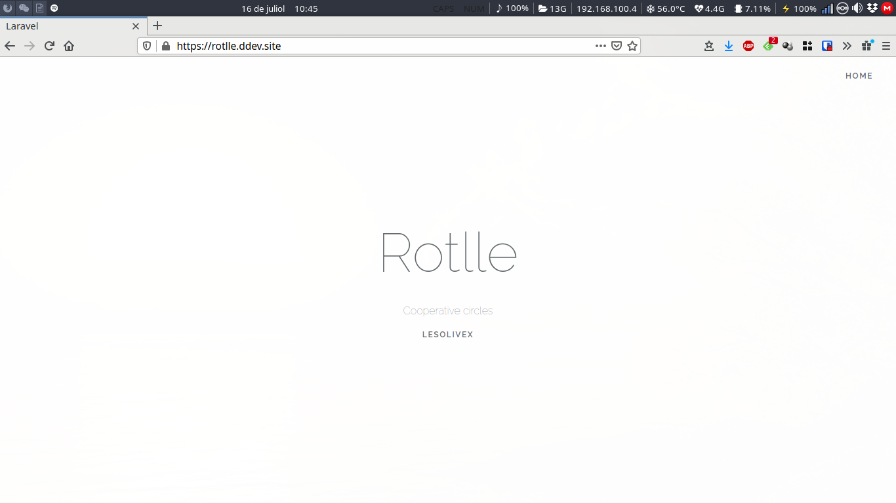

Entorno de desarrollo laravel en 5m con ddev

Vamos a mostrar como tener un entorno de desarrollo en local con laravel en menos de 5 mínutos.
Para ello vamos a utilizar ddev una pequeña pero potente herramienta que nos permite tener nuestro entorno de desarrollo:
- Servidor encriptado.
- MariaDB.
- Instancia de phpMyAdmin
- Servidor MailHog (Verificación de correos electrónicos).
Vamos a ello.
Instalación de ddev
Bajamos e instalamos ddev.
curl -L https://raw.githubusercontent.com/drud/ddev/master/scripts/install_ddev.sh | bash
Instalación de mkcert
mkcert nos permite tener certificados SSL en local.
wget https://github.com/FiloSottile/mkcert/releases/download/v1.1.2/mkcert-v1.1.2-linux-amd64
mv mkcert-v1.1.2-linux-amd64 mkcert
chmod +x mkcert
sudo cp mkcert /usr/local/bin/
mkcert -install
Configuración de proyecto
En caso de tener ya nuestro proyecto en laravel entramos en su carpeta.
ddev config --project-type=laravel --project-name=$PROYECTO --docroot=public
ddev start
En caso de iniciar un proyecto desde cero.
ddev config --project-type=laravel --project-name=$PROYECTO --docroot=public --create-docroot
ddev start
ddev composer create --prefer-dist laravel/laravel
ddev composer install
Conexión con la base de datos
Si aún no tenemos fichero de configuración .env podemos ejecutar este comando para hacer la conexión con la base de datos.
ddev exec "cat .env.example | sed -E 's/DB_(HOST|DATABASE|USERNAME|PASSWORD)=(.*)/DB_\1=db/g' > .env"
Si lo preferimos podemos hacerlo a mano editando el fichero .env.
DB_CONNECTION=mysql
DB_HOST=db
DB_PORT=3306
DB_DATABASE=db
DB_USERNAME=db
DB_PASSWORD=db
Puesta en marcha.
chmod +x artisan
ddev exec ./artisan key:generate
ddev exec ./artisan migrate:fresh --seed
Depuración con vscode
Instalamos la extensión php-debug en vscode.
Configuración:
{
// Use IntelliSense para saber los atributos posibles.
// Mantenga el puntero para ver las descripciones de los existentes atributos.
// Para más información, visite: https://go.microsoft.com/fwlink/?linkid=830387
"version": "0.2.0",
"configurations": [
{
"name": "Listen for XDebug",
"type": "php",
"request": "launch",
"port": 9000,
"hostname": "0.0.0.0",
"pathMappings": {
"/var/www/html": "${workspaceRoot}"
}
},
{
"name": "Launch currently open script",
"type": "php",
"request": "launch",
"program": "${file}",
"cwd": "${fileDirname}",
"port": 9000
}
]
}
ddev describe
NAME TYPE LOCATION URL STATUS
$PROYECTO laravel ~/desarrollo/$PROYECTO https://$PROYECTO.ddev.site running
Project Information
-------------------
PHP version: 7.3
NFS mount enabled: false
Database type: mariadb
MariaDB version: 10.2
URLs
----
https://$PROYECTO.ddev.site
https://127.0.0.1:32773
http://$PROYECTO.ddev.site
http://127.0.0.1:32774
MySQL/MariaDB Credentials
-------------------------
Username: "db", Password: "db", Default database: "db"
or use root credentials when needed: Username: "root", Password: "root"
Database hostname and port INSIDE container: db:3306
To connect to db server inside container or in project settings files:
mysql --host=db --user=db --password=db --database=db
Database hostname and port from HOST: 127.0.0.1:32772
To connect to mysql from your host machine,
mysql --host=127.0.0.1 --port=32772 --user=db --password=db --database=db
Other Services
--------------
MailHog (https): https://$PROYECTO.ddev.site:8026
MailHog: http://$PROYECTO.ddev.site:8025
phpMyAdmin (https): https://$PROYECTO.ddev.site:8037
phpMyAdmin: http://$PROYECTO.ddev.site:8036
DDEV ROUTER STATUS: healthy
ssh-auth status: healthy